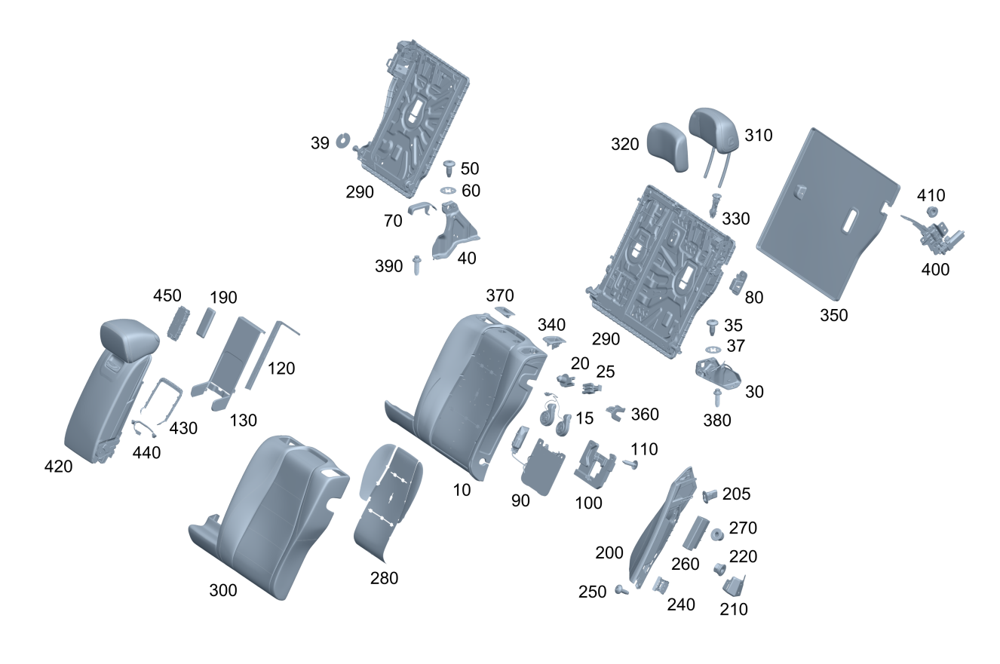

| № | Артикул | Название | Кол. | Примечание | Ограничение |
|---|---|---|---|---|---|
| 10 | A 167 920 67 28 | Накладка спинки сиденья | 1 | Мягкая подкладка спинки сиденья в задней части салона слева | |
| 10 | A 167 920 69 28 | Накладка спинки сиденья | 1 | Мягкая подкладка спинки сиденья в задней части салона слева | U18+402 |
| 10 | A 167 920 85 28 | Накладка спинки сиденья | 1 | Мягкая подкладка спинки сиденья в задней части салона слева | U06 |
| 10 | A 167 920 68 28 | Накладка спинки сиденья | 1 | Мягкая подкладка спинки сиденья в задней части салона справа | |
| 10 | A 167 920 70 28 | Накладка спинки сиденья | 1 | Мягкая подкладка спинки сиденья в задней части салона справа | U18+402 |
| 10 | A 167 920 86 28 | Накладка спинки сиденья | 1 | Мягкая подкладка спинки сиденья в задней части салона справа | U06 |
| 15 | A 099 906 75 03 | - Вентилятор (LUEFTER) | 1 | Электродвигатель вентиляции сиденья спинка сиденья в задней части салона слева | 402 |
| 15 | A 099 906 75 03 | - Вентилятор (LUEFTER) | 1 | Электродвигатель вентиляции сиденья спинка сиденья в задней части салона справа | 402 |
| 20 | A 000 991 12 95 | - Фиксатор вставной (EINSTECKBEFESTIGER) | 1 | Вентилятор (левый); 6.5\-7 MM | 402 |
| 20 | A 000 991 12 95 | - Фиксатор вставной (EINSTECKBEFESTIGER) | 1 | Вентилятор (правый); 6.5\-7 MM | 402 |
| 25 | A 221 545 03 28 | - Корпус штекера (STECKERGEHAEUSE) | 1 | Вентилятор (левый); 2\-PIN MQS | 402 |
| 25 | A 221 545 03 28 | - Корпус штекера (STECKERGEHAEUSE) | 1 | Вентилятор (правый); 2\-PIN MQS | 402 |
| 30 | A 167 920 65 28 | Поворотная опора | 1 | Вращающаяся опора снаружи Спинка сиденья слева Сиденья задней части салона | |
| 30 | A 167 920 66 28 | Поворотная опора | 1 | Вращающаяся опора снаружи Спинка сиденья справа Сиденья задней части салона | |
| 35 | A 001 984 43 29 | - Винт Torx с полукр. гол. (LINSENKOPFSCHRAUBE M. ISR) | 1 | Болт каркаса спинки сиденья слева \- сиденья в задней части салона; M6X14 | |
| 35 | A 001 984 43 29 | - Винт Torx с полукр. гол. (LINSENKOPFSCHRAUBE M. ISR) | 1 | Болт каркаса спинки сиденья справа \- сиденья в задней части салона; M6X14 | |
| 37 | A 094 990 76 01 | - SPRING NUT (FEDERMUTTER) | 1 | Заднее сиденье слева | |
| 37 | A 094 990 76 01 | - SPRING NUT (FEDERMUTTER) | 1 | Заднее сиденье справа | |
| 39 | A 295 923 02 00 | - Проставочная пластина | 1 | Проставочная пластина Вращающаяся опора Спинка сиденья справа Сиденья задней части салона | |
| 40 | A 167 920 63 28 | Поворотная опора | 1 | Вращающаяся опора Спинка сиденья посредине Сиденья задней части салона | |
| 50 | A 001 984 43 29 | - Винт Torx с полукр. гол. (LINSENKOPFSCHRAUBE M. ISR) | 1 | Болт средней вращающейся опоры, спинка сиденья, сиденья в задней части салона; M6X14 | |
| 60 | A 094 990 76 01 | - SPRING NUT (FEDERMUTTER) | 1 | Гайка вращающейся опоры спинки посередине \- сиденья в задней части салона | |
| 70 | A 167 921 93 00 | Накладка каркаса сиденья | 1 | Накладка Вращающаяся опора Каркас сиденья посредине Сиденья задней части салона | |
| 80 | A 167 923 45 00 | Облицовка рамы спинки | 1 | Накладка Top Tether Спинка сиденья слева Сиденья задней части салона | |
| 80 | A 167 923 45 00 | Облицовка рамы спинки | 1 | Накладка Top Tether Спинка сиденья справа Сиденья задней части салона | |
| 90 | A 167 923 42 00 | Поясничный подпор | 1 | Поясничный подпор заднего сиденья слева | U06 |
| 90 | A 167 923 49 00 | Поясничный подпор | 1 | Поясничный подпор заднего сиденья слева | U18 |
| 90 | A 167 923 44 00 | Поясничный подпор | 1 | Поясничный подпор заднего сиденья справа | U06 |
| 90 | A 167 923 50 00 | Поясничный подпор | 1 | Поясничный подпор заднего сиденья справа | U18 |
| 100 | A 167 684 99 00 | Подпорка | 1 | Поясничный подпор заднего сиденья слева | U18 |
| 100 | A 167 684 11 01 | Подпорка | 1 | Поясничный подпор заднего сиденья слева | U06 |
| 100 | A 167 684 00 01 | Подпорка | 1 | Поясничный подпор заднего сиденья справа | U18 |
| 100 | A 167 684 12 01 | Подпорка | 1 | Поясничный подпор заднего сиденья справа | U06 |
| 110 | A 000 991 37 02 | Фиксатор вставной (EINSTECKBEFESTIGER) | 2 | Крепление держателя, сзади слева | U06/U18 |
| 110 | A 000 991 37 02 | Фиксатор вставной (EINSTECKBEFESTIGER) | 2 | Крепление держателя, сзади справа | U06/U18 |
| 120 | A 167 973 23 00 | Накладка подлокотника | 1 | Накладка справа Облицовка Выемка Подлокотник/вещевое отделение Спинка сиденья Сиденья задней части салона | |
| 130 | A 167 923 40 00 | Облицовка рамы спинки | 1 | Облицовка выемки подлокотник / вещевое отделение спинка сиденья в задней части салона | |
| 190 | A 223 900 89 51 | Блок управления (STEUERGERAET) | 1 | Планшетный компьютер (центральный модуль Comand) | 607 |
| 190 | A 223 900 16 54 | Блок управления (STEUERGERAET) | 1 | Планшетный компьютер (центральный модуль Comand) | 607 |
| 200 | A 167 920 50 28 | Спинка заднего сиденья | 1 | Спинка заднего сиденья снаружи слева | 620A+293 |
| 200 | A 167 920 67 29 | Спинка заднего сиденья | 1 | Спинка заднего сиденья снаружи слева | 620A+(625A/635A)+293 |
| 200 | A 167 920 67 29 | Спинка заднего сиденья | 1 | Спинка заднего сиденья снаружи слева | 620A+(621A/624A/634A/625A)+293+(807+057/808/29X) |
| 200 | A 167 920 52 28 | Спинка заднего сиденья | 1 | Спинка заднего сиденья снаружи справа | 620A+293 |
| 200 | A 167 920 68 29 | Спинка заднего сиденья | 1 | Спинка заднего сиденья снаружи справа | 620A+(625A/635A)+293 |
| 200 | A 167 920 68 29 | Спинка заднего сиденья | 1 | Спинка заднего сиденья снаружи справа | 620A+(621A/624A/634A/625A)+293+(807+057/808/29X) |
| 205 | A 204 923 02 14 | - Держатель (HALTER) | 1 | Спинка заднего сиденья снаружи слева | |
| 205 | A 204 923 02 14 | - Держатель (HALTER) | 1 | Спинка заднего сиденья снаружи справа | |
| 210 | A 167 920 75 28 | Спинка заднего сиденья | 1 | Крепление спинки заднего сиденья снаружи слева | |
| 210 | A 167 920 76 28 | Спинка заднего сиденья | 1 | Крепление спинки заднего сиденья снаружи справа | |
| 220 | A 004 990 62 50 | Гайка с фланцем (SECHSKANTMUTTER M FLANSCH) | 2 | Крепление спинки заднего сиденья снаружи слева; M6 | |
| 220 | A 004 990 62 50 | Гайка с фланцем (SECHSKANTMUTTER M FLANSCH) | 2 | Крепление спинки заднего сиденья снаружи справа; M6 | |
| 240 | A 000 991 81 04 | Крепежная скоба (BEFESTIGUNGSKLAMMER) | 3 | Спинка заднего сиденья снаружи слева | |
| 240 | A 000 991 81 04 | Крепежная скоба (BEFESTIGUNGSKLAMMER) | 3 | Спинка заднего сиденья снаружи справа | |
| 250 | N 000000 001476 | Винт с 6-гр. глвк (SECHSRUNDSCHRAUBE) | 1 | Крепление спинки заднего сиденья снаружи слева; M6X16 | |
| 250 | N 000000 001476 | Винт с 6-гр. глвк (SECHSRUNDSCHRAUBE) | 1 | Крепление спинки заднего сиденья снаружи справа; M6X16 | |
| 260 | A 167 860 85 03 | Боковая НПБ | 1 | Боковая подушка безопасности в задней части салона слева | 293+700 |
| 260 | A 167 860 86 03 | Боковая НПБ | 1 | Боковая подушка безопасности в задней части салона справа | 293+700 |
| 270 | N 000000 008272 | Гайка (MUTTER) | 1 | Крепление левой боковой подушки безопасности; M6 | 293 |
| 270 | N 000000 008272 | Гайка (MUTTER) | 1 | Крепление правой боковой подушки безопасности; M6 | 293 |
| 280 | A 167 906 07 12 | Подогрев сидений | 1 | Подушка с подогревом спинки слева \- сиденья в задней части салона | 872 |
| 280 | A 167 906 07 12 | Подогрев сидений | 1 | Подушка с подогревом спинки справа \- сиденья в задней части салона | 872 |
| 290 | A 167 920 61 28 | Рама спинки сиденья | 1 | Каркас спинки сиденья в задней части салона слева | |
| 290 | A 167 920 62 28 | Рама спинки сиденья | 1 | Каркас спинки сиденья в задней части салона справа | |
| 300 | A 167 920 54 28 | Обивка спинки сиденья | 1 | Обивка спинки сиденья в задней части салона слева | 620A |
| 300 | A 167 920 69 29 | Обивка спинки сиденья | 1 | Обивка спинки сиденья в задней части салона слева | 620A+(625A/635A) |
| 300 | A 167 920 69 29 | Обивка спинки сиденья | 1 | Обивка спинки сиденья в задней части салона слева | 620A+(621A/624A/634A/625A)+(807+057/808/29X) |
| 300 | A 167 920 76 29 | Обивка спинки сиденья | 1 | Обивка спинки сиденья в задней части салона слева Рулевое управление: Влево | 700A+700+(807+057/808/29X) |
| 300 | A 167 920 56 28 | Обивка спинки сиденья | 1 | Обивка спинки сиденья в задней части салона справа | 620A |
| 300 | A 167 920 70 29 | Обивка спинки сиденья | 1 | Обивка спинки сиденья в задней части салона справа | 620A+(625A/635A) |
| 300 | A 167 920 70 29 | Обивка спинки сиденья | 1 | Обивка спинки сиденья в задней части салона справа | 620A+(621A/624A/634A/625A)+(807+057/808/29X) |
| 300 | A 167 920 77 29 | Обивка спинки сиденья | 1 | Обивка спинки сиденья в задней части салона справа Рулевое управление: Влево | 700A+700+(807+057/808/29X) |
| 310 | A 167 970 90 05 | Подголовник | 1 | Обивка подголовника слева \- сиденья в задней части салона | 620A |
| 310 | A 167 970 91 05 | Подголовник | 1 | Обивка подголовника слева \- сиденья в задней части салона | 620A+322 |
| 310 | A 167 970 76 06 | Подголовник | 1 | Обивка подголовника слева \- сиденья в задней части салона | 620A+(625A/635A)+322 |
| 310 | A 167 970 75 06 | Подголовник | 1 | Обивка подголовника слева \- сиденья в задней части салона | 620A+625A |
| 310 | A 167 970 76 06 | Подголовник | 1 | Обивка подголовника слева \- сиденья в задней части салона | 620A+(621A/624A/634A/625A)+322+(807+057/808/29X) |
| 310 | A 167 970 75 06 | Подголовник | 1 | Обивка подголовника слева \- сиденья в задней части салона | 620A+(621A/624A/634A/625A)+(807+057/808/29X) |
| 310 | A 167 970 90 05 | Подголовник | 1 | Обивка подголовника справа \- сиденья в задней части салона | 620A |
| 310 | A 167 970 91 05 | Подголовник | 1 | Обивка подголовника справа \- сиденья в задней части салона | 620A+322 |
| 310 | A 167 970 75 06 | Подголовник | 1 | Обивка подголовника справа \- сиденья в задней части салона | 620A+625A |
| 310 | A 167 970 76 06 | Подголовник | 1 | Обивка подголовника справа \- сиденья в задней части салона | 620A+(625A/635A)+322 |
| 310 | A 167 970 75 06 | Подголовник | 1 | Обивка подголовника справа \- сиденья в задней части салона | 620A+(621A/624A/634A/625A)+(807+057/808/29X) |
| 310 | A 167 970 76 06 | Подголовник | 1 | Обивка подголовника справа \- сиденья в задней части салона | 620A+(621A/624A/634A/625A)+322+(807+057/808/29X) |
| 320 | A 167 970 92 05 | Чехол доп. подушки | 1 | Дополнительная обивка подголовника слева сиденья в задней части салона | |
| 320 | A 167 970 05 06 | Чехол доп. подушки | 1 | Дополнительная обивка подголовника слева сиденья в задней части салона | 322 |
| 320 | A 167 970 92 05 | Чехол доп. подушки | 1 | Дополнительная обивка подголовника справа сиденья в задней части салона | |
| 320 | A 167 970 05 06 | Чехол доп. подушки | 1 | Дополнительная обивка подголовника справа сиденья в задней части салона | 322 |
| 330 | A 206 970 22 00 | Направляющая подголовника | 1 | С разблокировкой левого сиденья | |
| 330 | A 206 970 23 00 | Направляющая подголовника | 1 | Без разблокировки левого сиденья | |
| 330 | A 206 970 22 00 | Направляющая подголовника | 1 | С разблокировкой правого сиденья | |
| 330 | A 206 970 23 00 | Направляющая подголовника | 1 | Без разблокировки правого сиденья | |
| 340 | A 167 923 54 00 | Накладка ручки | 1 | К раме спинки, слева | |
| 340 | A 167 923 54 00 | Накладка ручки | 1 | К раме спинки, справа | |
| 350 | A 167 924 77 00 | Обивка спинки сиденья | 1 | Покрытие Каркас спинки сиденья слева Сиденья задней части салона | |
| 350 | A 167 924 78 00 | Обивка спинки сиденья | 1 | Покрытие Каркас спинки сиденья справа Сиденья задней части салона | |
| 360 | A 167 923 52 00 | Облицовка рамы спинки | 1 | Накладка Блокировка спинки сиденья слева Сиденья задней части салона | |
| 360 | A 167 923 52 00 | Облицовка рамы спинки | 1 | Накладка Блокировка спинки сиденья справа Сиденья задней части салона | |
| 370 | A 167 923 53 00 | Облицовка рамы спинки | 1 | Декоративная розетка выхода ремня безопасности посередине \- задняя полка / сиденья в задней части салона | |
| 380 | A 000 990 87 29 | Самонарезающий винт (GEWINDEFURCHENDE SCHRAUBE) | 1 | Поворотная опора (левая) к кузову; M10X32 | |
| 380 | A 000 990 87 29 | Самонарезающий винт (GEWINDEFURCHENDE SCHRAUBE) | 1 | Поворотная опора (правая) к кузову; M10X32 | |
| 390 | A 000 990 87 29 | Самонарезающий винт (GEWINDEFURCHENDE SCHRAUBE) | 3 | Болт средней вращающейся опоры, спинка сиденья, сиденья в задней части салона; M10X32 | |
| 400 | A 167 920 73 28 | Крепежная скоба | 1 | Скоба замка слева \- спинка сиденья в задней части салона | |
| 400 | A 167 920 74 28 | Крепежная скоба | 1 | Скоба замка справа \- спинка сиденья в задней части салона | |
| 410 | N 000000 008304 | Шестигранная гайка (SECHSKANTMUTTER) | 3 | Скоба замка слева \- спинка сиденья в задней части салона; M10 | |
| 410 | N 000000 008304 | Шестигранная гайка (SECHSKANTMUTTER) | 3 | Скоба замка справа \- спинка сиденья в задней части салона; M10 | |
| 420 | A 167 970 83 05 | Подлокотник | 1 | Подлокотник/вещевое отделение Задняя часть салона | 620A |
| 420 | A 167 970 02 06 | Подлокотник | 1 | Подлокотник/вещевое отделение Задняя часть салона | 620A+898+607 |
| 420 | A 167 970 72 06 | Подлокотник | 1 | Подлокотник/вещевое отделение Задняя часть салона | 620A+(625A/635A)+898+607 |
| 420 | A 167 970 74 06 | Подлокотник | 1 | Подлокотник/вещевое отделение Задняя часть салона | 620A+(625A/635A) |
| 420 | A 167 970 72 06 | Подлокотник | 1 | Подлокотник/вещевое отделение Задняя часть салона | 620A+(621A/624A/634A/625A)+898+607+(807+057/808/29X) |
| 420 | A 167 970 72 06 | Подлокотник | 1 | Подлокотник/вещевое отделение Задняя часть салона | 700A+898+607+(807+057/808/29X) |
| 420 | A 167 970 74 06 | Подлокотник | 1 | Подлокотник/вещевое отделение Задняя часть салона | 620A+(621A/624A/634A/625A)+(807+057/808/29X) |
| 420 | A 167 970 74 06 | Подлокотник | 1 | Подлокотник/вещевое отделение Задняя часть салона | 700A+(807+057/808/29X) |
| 430 | A 167 820 51 04 | - Рассеиватель | 1 | Рулевое управление: Влево | 876+830 |
| 440 | A 167 906 15 12 | - Светодиодный модуль | 1 | Эстетическая подсветка Держатель планшетного компьютера Рулевое управление: Влево | |
| 450 | A 449 901 58 01 | - Номер блока управления | 1 | Держатель планшетного компьютера блок управления подлокотник / вещевое отделение в задней части салона [672] ДЕТАЛЬ ПОСЛЕ УСТАН.ПРОВЕРИТЬ НА АКТУАЛЬНОСТЬ "ПРОШИВНОГО" ПО | 607 |
Позиций: 116 · подписано на схемах: 116 · колесо — плавный зум в курсор, перетаскивание — пан, двойной клик — зум, клик по артикулу — скопировать.